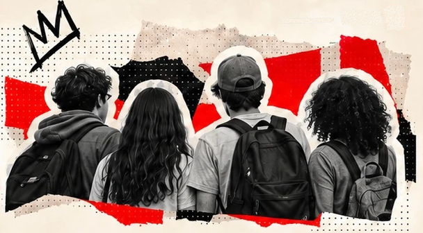
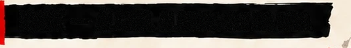
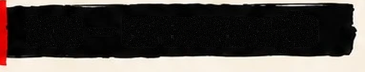
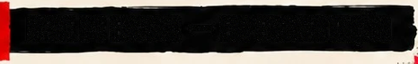
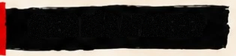
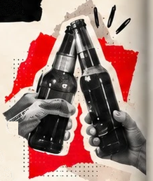
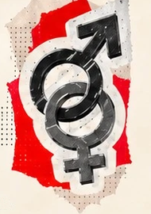
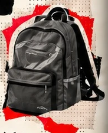
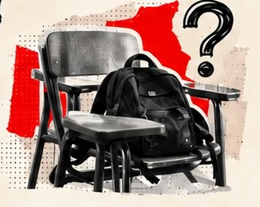
SOB EFEITO
PÁGINA 15
NÃO EXISTE UM PERFIL ÚNICO
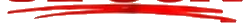
O consumo varia conforme a idade, o sexo, a rede de ensino e a substância.
1IDADE — ÁLCOOL ALGUMA VEZ NA VIDA
13–15 anos
16–17 anos
46,4% 66,3%O grupo mais velho apresentou maior prevalência
de experimentação. Isso não acompanha as mesmas
pessoas envelhecendo; “alguma vez na vida” acumula
tempo de exposição.
2SEXO — EXPERIMENTAÇÃO
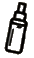
Álcool
Vape
Meninas
Meninos
Meninas
Meninos
57,5% 49,7% 31,7% 27,4%Os padrões não são idênticos para todas as substâncias.
3REDE DE ENSINO — EXPERIMENTAÇÃO
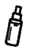
Drogas
ilícitas
Vape
Pública
Privada
Pública
Privada
8,7% 5,7% 30,4% 24,9%Essas diferenças não provam que o tipo de escola, sozinho,
provoque o consumo.
4QUEM NÃO APARECE?
A PeNSE descreve estudantes
matriculados nas escolas e etapas
abrangidas pelo desenho da pesquisa.
Adolescentes fora desse universo
precisam ser investigados por
outras fontes.